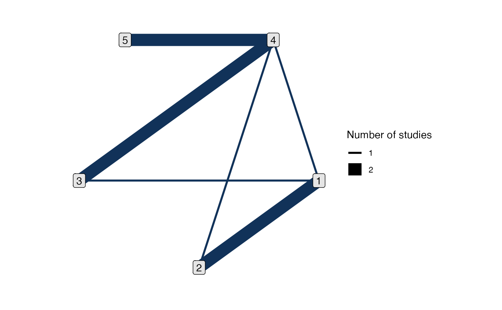

Set up a network containing contrast-based aggregate data (AgD), i.e.
summaries of relative effects between treatments such as log Odds Ratios.
Multiple data sources may be combined once created using combine_network().
Usage
set_agd_contrast(
data,
study,
trt,
y = NULL,
se = NULL,
sample_size = NULL,
trt_ref = NULL,
trt_class = NULL
)Arguments
- data
a data frame
- study
column of
dataspecifying the studies, coded using integers, strings, or factors- trt
column of
dataspecifying treatments, coded using integers, strings, or factors- y
column of
dataspecifying a continuous outcome- se
column of
dataspecifying the standard error for a continuous outcome- sample_size
column of
datagiving the sample size in each arm. Optional, see details.- trt_ref
reference treatment for the network, as a single integer, string, or factor. If not specified, a reasonable well-connected default will be chosen (see details).
- trt_class
column of
dataspecifying treatment classes, coded using integers, strings, or factors. By default, no classes are specified.
Value
An object of class nma_data
Details
Each study should have a single reference/baseline treatment,
against which relative effects in the other arm(s) are given. For the
reference arm, include a data row with continuous outcome y equal to
NA. If a study has three or more arms (so two or more relative effects),
set the standard error se for the reference arm data row equal to the
standard error of the mean outcome on the reference arm (this determines
the covariance of the relative effects, when expressed as differences in
mean outcomes between arms).
All arguments specifying columns of data accept the following:
A column name as a character string, e.g.
study = "studyc"A bare column name, e.g.
study = studycdplyr::mutate()style semantics for inline variable transformations, e.g.study = paste(author, year)
By default, trt_ref = NULL and a network reference treatment will be chosen
that attempts to maximise computational efficiency and stability. If an
alternative reference treatment is chosen and the model runs slowly or has
low effective sample size (ESS) this may be the cause - try letting the
default reference treatment be used instead. Regardless of which treatment is
used as the network reference at the model fitting stage, results can be
transformed afterwards: see the trt_ref argument of
relative_effects() and predict.stan_nma().
The sample_size argument is optional, but when specified:
Enables automatic centering of predictors (
center = TRUE) innma()when a regression model is given for a network combining IPD and AgDEnables production of study-specific relative effects, rank probabilities, etc. for studies in the network when a regression model is given
Nodes in
plot.nma_data()may be weighted by sample size
See also
set_ipd() for individual patient data, set_agd_arm() for
arm-based aggregate data, and combine_network() for combining several
data sources in one network.
print.nma_data() for the print method displaying details of the
network, and plot.nma_data() for network plots.
Examples
# Set up network of Parkinson's contrast data
head(parkinsons)
#> studyn trtn y se n diff se_diff
#> 1 1 1 -1.22 0.504 54 NA 0.504
#> 2 1 3 -1.53 0.439 95 -0.31 0.668
#> 3 2 1 -0.70 0.282 172 NA 0.282
#> 4 2 2 -2.40 0.258 173 -1.70 0.382
#> 5 3 1 -0.30 0.505 76 NA 0.505
#> 6 3 2 -2.60 0.510 71 -2.30 0.718
park_net <- set_agd_contrast(parkinsons,
study = studyn,
trt = trtn,
y = diff,
se = se_diff,
sample_size = n)
# Print details
park_net
#> A network with 7 AgD studies (contrast-based).
#>
#> -------------------------------------------------- AgD studies (contrast-based) ----
#> Study Treatment arms
#> 1 2: 1 | 3
#> 2 2: 1 | 2
#> 3 3: 4 | 1 | 2
#> 4 2: 4 | 3
#> 5 2: 4 | 3
#> 6 2: 4 | 5
#> 7 2: 4 | 5
#>
#> Outcome type: continuous
#> ------------------------------------------------------------------------------------
#> Total number of treatments: 5
#> Total number of studies: 7
#> Reference treatment is: 4
#> Network is connected
# Plot network
plot(park_net)
